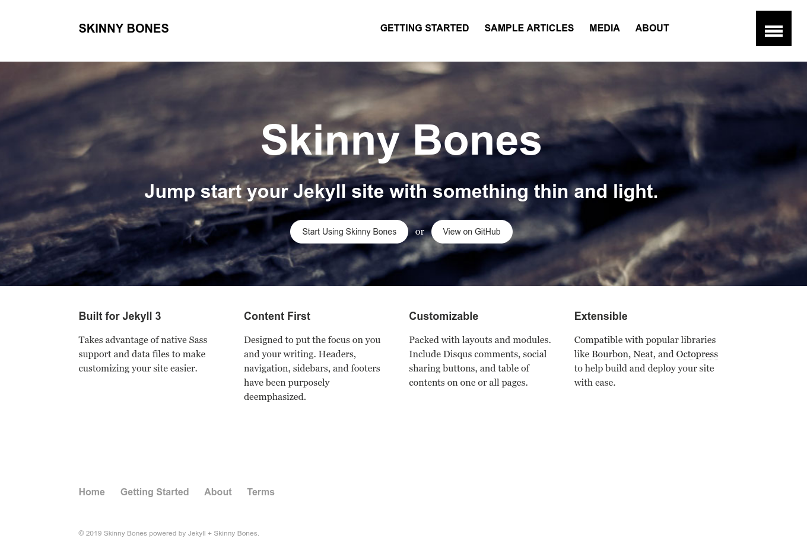
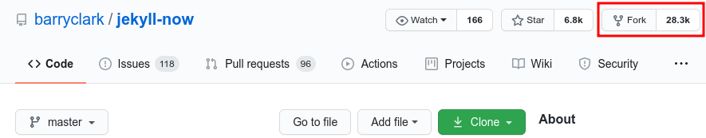
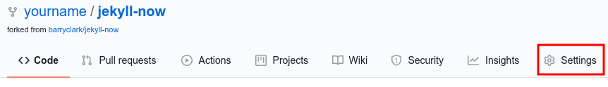
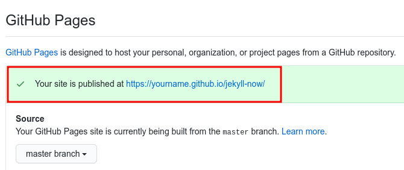

Introduction to Jekyll
How many are already familiar with GitHub?
How many have heard of (or used) static sites before?
Static sites:
Dynamic sites (CMS):
Benefits of static sites:
What do static sites look like?

What do static sites look like?

What do static sites look like?

What do static sites look like?
Jekyll-Now
For this section of the workshop we will be using a special version of jekyll called jekyll-now which has been set up to be immediately usable in a few easy steps:
Jump to the jekyll-now project page.Click on the Fork button at the top right corner of the jekyll-now project page (see screenshot below which has the button highlighted in red):
After a few moments, you should see the project page has been copied over to your account (your username will appear in the top left corner of the screen, before the project name, as in the screenshot below):
Click on the button labelled Settings in the row of links near the top of the page (see screenshot below with the button highlighted in red):
Once the Settings page loads, scroll all the way down to the bottom of the page and look for a section called GitHub Pages. You should see a message that GitHub Pages is disabled. Click on the drop down menu (highlighted below) and select the master branch (highlighted in the second image below):


After a moment, the page should reload – you must scroll down again to the bottom of the page to confirm that the GitHub Pages site has been published successfully. If everything has gone well, there should be a message indicating the URL of your new website (see highlighted example below):
